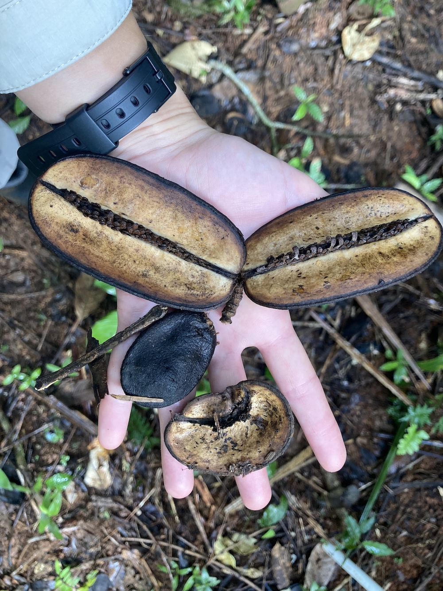
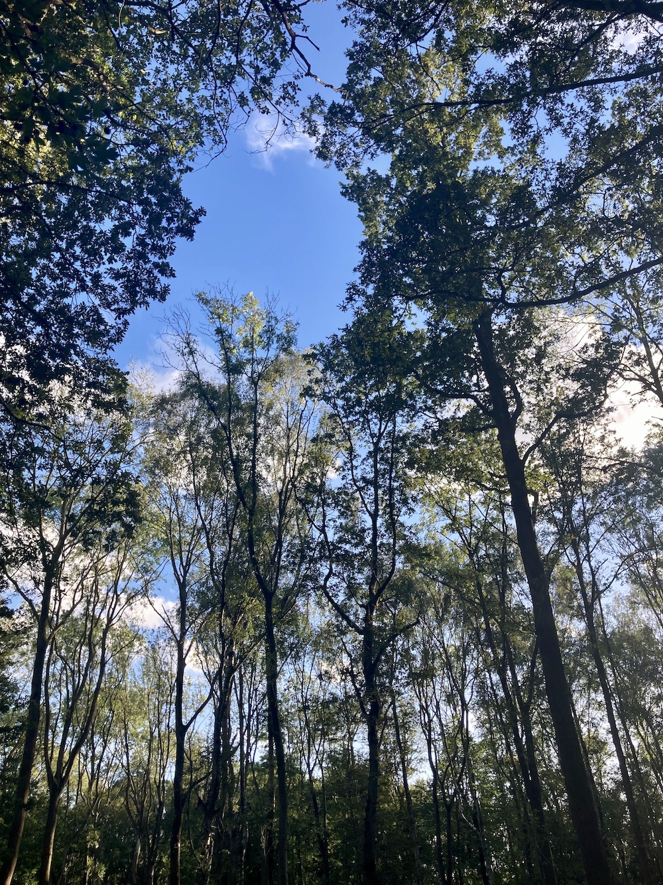

research
A bit about my current research projects.
seed natural enemies and forest plant diversity
 High local species richness in tropical forests poses a challenge to general ecological theory, where competition for resources limits local alpha diversity through competitive exclusion. The Janzen-Connell hypothesis proposes that coexistence is achieved through the role of specialist plant enemies, which reduce recruitment close to reproductive adults of the same species and in areas of high conspecific density.
The role of natural enemies in structuring and maintaining plant diversity in tropical forests is being increasingly recognised. To date, research has focused almost exclusively on enemies attacking seeds after dispersal from the parent plant. However, we don’t know much about the fate of seeds that are still developing and attached to the parent plant. Pre-dispersal seed predation could cause a reduction in the number of seeds that are successfully dispersed, with unknown consequences for plant diversity maintenance.
My doctoral research with Sofia Gripenberg aims to investigate the role of pre-dispersal seed enemies in plant diversity maintenance. With Barro Colorado Island in Panama as a field site, I am using long-term seed rain data to model community dynamics and collecting information on individual plant species and their enemies in the field.
context-dependence and transferability in ecology
 Despite ecosystems being incredibly complex and changeable, conservation and management decisions for ecosystems are often based on the results of meta-analyses which average effects across heterogeneous populations. To make accurate predictions about the effects of actions on individual systems we need to take a more individualised approach.
Working with Becks Spake, I am identifying how sampling and modelling decisions could influence the accuracy of individual-effect predictions.
variability in herbivory
 Interactions between plants and their insect herbivores are one of the most studied types of ecological interactions. Multiple studies have identified huge variability in herbivory across different levels of biological organisation. A small fraction of plants can experience disproportionately high levels of herbivore damage, whilst the majority experience relatively low levels. Despite the potential ecological and evolutionary consequences of such variability, we still cannot explain why these patterns emerge so frequently in nature.
Interactions between plants and their insect herbivores are one of the most studied types of ecological interactions. Multiple studies have identified huge variability in herbivory across different levels of biological organisation. A small fraction of plants can experience disproportionately high levels of herbivore damage, whilst the majority experience relatively low levels. Despite the potential ecological and evolutionary consequences of such variability, we still cannot explain why these patterns emerge so frequently in nature.
I am a member of the Herbivory Variability Network, a global collaboration of researchers which aims to describe and understand how and why patterns in plant–herbivore interactions vary across the tree of life and around the world.